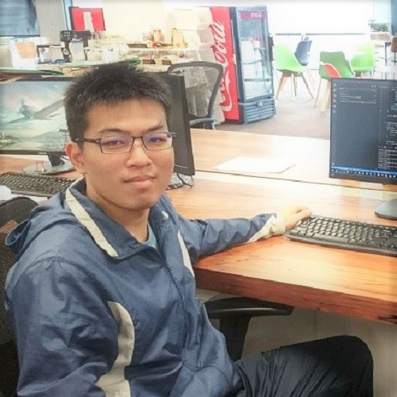
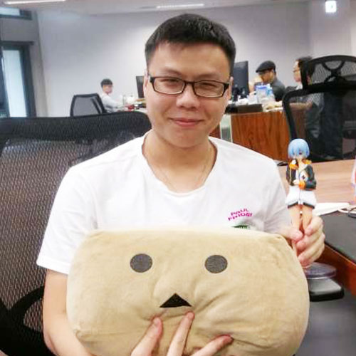

David
元智大學
在聚賢科技這將近一年的時間裡，真的學到很多實務上面的應用，真正的幫助我脫離學院派的程式設計風格，在這段時間裡從一個幾乎甚麼都不會的學生，成長成一位能共同開發或獨立完成需求的人，且在
code review 的過程裡更是不斷的提升了我程式的設計思維跟大局觀，對我未來任職有巨大的幫助。
在實習的過程裡，常常會遇到不同的問題，訓練我面對不同的實務挑戰以及設計思維，當遇到難關時，同事們都非常熱心且耐心的解答。
作為一個聚賢科技的實習生，只要願意努力，一定能持續的提升自己的能力，甚至有機會接觸到大型專案，而不是只是來公司打雜，
很感謝公司提供我這樣的實習機會，讓我能在這一年有大幅的成長。
Jessica
政治大學
很多事情是在學校所學不到的，自從來到了聚賢科技之後，我感覺才真正踏入了將程式運用於實務的領域。
因為是第一次實習，會有緊張跟不熟練的地方，但是聚賢科技的氛圍非常好，同事們都願意協助我解決問題並且幫助我融入公司。
我覺得在聚賢科技學到了很多東西，像是clean
code、資料庫的備份還原、功能測試等等，並且除了程式之外，也學習到另一項對程式設計很重要的事情，那就是能夠清楚表達自己的思路並且和別人討論，在和別人討論的時候可以更好的發現自己的不足、吸收別人的長處。
我很慶幸第一次的實習就來到了聚賢科技，在這個團隊中除了學習之外，良好的氛圍也帶給我每天的好心情。
Ted
交通大學
從開始實習到現在已經過了將近一年的時間，剛開始實習的時候還會擔心自己的能力能不能幫上大家的忙，但幸好同事們人都很好，有問題都可以問他們，有時候不小心戳了他們，他們也可以包容。在這實習的一年間不僅讓我覺得實力有所增長，也對我自己有了更多的自信，公司整體環境非常舒適，同事間相處也很融洽，如果想要在大學畢業前找一個實習工作，我覺得聚賢科技將會是個不錯的選擇。除此之外，也可以提前體會與學校不同的職場環境，增加自己的歷練。
William
交通大學
起初是抱持著刷履歷的心態出來實習的，但來到「聚賢科技」之後才發現最大的收穫不是履歷多出的實習欄位，也不是戶頭多出的零用錢，而是實習期間了解到QA部門的流程以及想法。
以前在測試自己的程式時，只會印出變數的值是否正確或是邏輯是否有誤，但實習期間給了我不一樣的想法，我們要以使用者的想法出發來測試產品，這是大學生撰寫程式不會看中的一點。而且我也事先了解到職場和學校的差別，職場的產品還需要和客戶溝通，不再只是和自己妥協，這讓我對未來職場的生活有了一定的畫面，不會很緊張或是一無所知。因此我相信這個經驗對我會很有幫助。
最後謝謝「聚賢科技」讓我有這個機會來增進自己，也推薦其他對於未來很迷惘的學生，「聚賢科技」一定能給你帶來你無法想像的成長。

Daniel
台北科技大學
工作與學校之間有許多不同的地方，在學校的作法與在職場的做法無法相提並論。
在工作中是實際的下到各專案中實際的學習，可以學習到職場間的行為規範，也可以偷學學長的程式技巧。
同桌的學長們也抱持著尊重友善包容，工作環境是快活不死板。
作為實習，可以學到的不只是實際的技能，更多的是得到工作的經驗。
以往在學校學到的是寫程式的能力，而在這裡則會磨練更多，舉凡部門間的溝通、資料庫的使用甚至到商用軟體的設計技巧都是可以在這邊學會的。
學習上可以收穫許多，工作上不緊張不匆忙，在這歷練職場的能力。

Kyle
台北科技大學
聚賢科技對於實習來說，絕對是一個非常合適的場所。
來這裡，你能學到作為一個工程師，所該具備的基本技能。
來這裡，你能學到對於一個大型專案，團隊如何分工合作。
來這裡，還能學到為了創建一個專案，需要考慮哪些項目。
並且在這裡，大家都很年輕，沒有代溝，沒有擾人的上下級關係，也沒有令人髮指的公司內鬥。
在這裡比能力重要的是，對於程式設計的熱誠，以及面對挑戰所展現出的態度。
除此之外，公司還有提供免費午餐、零時和下午茶點心，每隔一陣子就會有一次聚餐，甚至還有公司全體員工的郊遊，公司福利非常豐富。
我由衷慶幸自己能來到聚賢科技，度過一段快樂且充實的實習時光。
Denny
台北科技大學
從開始實習到現在已經過了將近一年的時間，剛開始實習的時候還會擔心自己的能力能不能幫上大家的忙，但幸好同事們人都很好，有問題都可以問他們，有時候不小心戳了他們，他們也可以包容。在這實習的一年間不僅讓我覺得實力有所增長，也對我自己有了更多的自信，公司整體環境非常舒適，同事間相處也很融洽，如果想要在大學畢業前找一個實習工作，我覺得聚賢科技將會是個不錯的選擇。除此之外，也可以提前體會與學校不同的職場環境，增加自己的歷練。

Denny_Lee
台北科技大學
我剛來聚賢科技公司之前已經對Golang多少有些瞭解了。但是真真正正的要處理到『龐大的資料量』時挑戰就來了。很幸運的我的上級主管也能給予我這麼好的機會來處理這一部份的資料。當『龐大資料』與『複雜邏輯』在一起的時候必須要更加深入的瞭解語言的特性、架構的設計、思考怎樣的方式才能讓核心跟記憶體用量不要太多。而且主管也提供了很多的方法與想法。如果想要體驗困難、有挑戰性且使用新穎的技術『聚賢科技』絕對可以滿足你。
Darren
台北科技大學
實習，可以說是進入社會前的體驗，體驗著跟以往不同的經驗。
我是銘傳資工系大四的學生，在我們系其實是並不需用實習的，因為並不是畢業門檻，而我會選擇花大四大部分時間來時實習，是因為我想提前認識社會環境並學習業界知識，而我很慶幸我做的選擇是對的。在聚賢科技公司實習的這段期間讓我獲益良多，了解了QA部門的運作與如何跟團隊跟同事做溝通，認知到要成功，很多東西都是環環相扣，不同部門必須互相通力合作才會有成果。
時光飛逝，六個月的實習進入了尾聲，想到最初來聚賢科技公司面試時的緊張到現在已經要從這邊畢業的感慨真是令人婉惜。在這邊我很謝謝我的主管與同事們對於我不管是專業上的指教或是平常生活上的關懷，總是不吝付出，我對這些人事物的思念我想會隨著離開這裡的每一天與時俱增。最後，感謝聚賢科技公司,同這段時間的照顧，也推薦想實習的人，來此公司磨練。
Fred
台北科技大學
來聚賢科技實習的這段時間真的學到很多在學校學不到的東西，實習的這段期間有點像是半隻腳踏入社會了，學習的過程中常常遇到瓶頸，但只要勇於發問，大家都是很樂意協助的。在這邊學到的知識不只有程式方面，也可以學到如何跟人溝通。程式方面的話之前覺得只要實作出功能就好了，所以導致程式碼都隨便亂寫。現在的話就會考慮到程式碼的可讀性、維護性與效能，也會思考為什麼要選A作法不使用B作法。如果有人覺得工程師能夠避免與人交談的話那就大錯特錯了，在做一個新功能或著是修改一些BUG時，常常都會需要去與人溝通，而且溝通通常都是很重要的一個環節。比起在學校混學分，能夠在大四下來這裡實習真的覺得對自己更有幫助！
Sarah
台北科技大學
在畢業前實習最大的收穫應該就是學習到了職場的生活，像是如何與主管或同事應對、對於專案解決的方式與流程、如何滿足客戶的要求、產品上線後遇到客戶的反應需要快速解決，這些都是學校無法體會到的步調與經驗，也很慶幸周圍的同事人都很好，願意在我有問題的時候幫助我，大家也都會互相討論自己遇到什麼問題再一起解決。在這裡做了半年的QA跟半年的Backend，對我來說我是學到非常多的知識與經驗的，在不同部門可以體驗到不同的工作經驗與專業知識，從一開始什麼都不懂逐漸到可以自己完成任務，真的覺得自己比在學校成長多很多。運氣很好的我找到了一個可以學習到很多東西的實習機會，我認為除了專業技術以外，實習很重要的一部分也是人，同事之間的交流都是我學習的機會，多多向前輩學習他們的經驗，讓自己可以從做中學，也要努力加緊自己的腳步才能追上他們，在這個團隊中我是很快樂的學習的。
Ivan
國立臺灣大學
在聚賢科技實習的這段時間除了發現寫測試的重要性，還接觸到以往獨自開發時沒遇過的技術，包含自動化測試，CI / CD，且對於混帳有更深刻的了解（因為常常用錯...
）。更甚，在這裡工作的過程中也意識到與他人一同工作所需要注意的事情，包含如何精準表達自己的想法，將抽象的程式思維轉換成具體的事物，快速理解他人的思緒，多人協作時如何分配時間與溝通諸如此類，逐漸理解到身為一個軟體工程師除了寫程式之外應該具備的能力，我想這大概是在聚賢科技得到的最大的收穫吧。